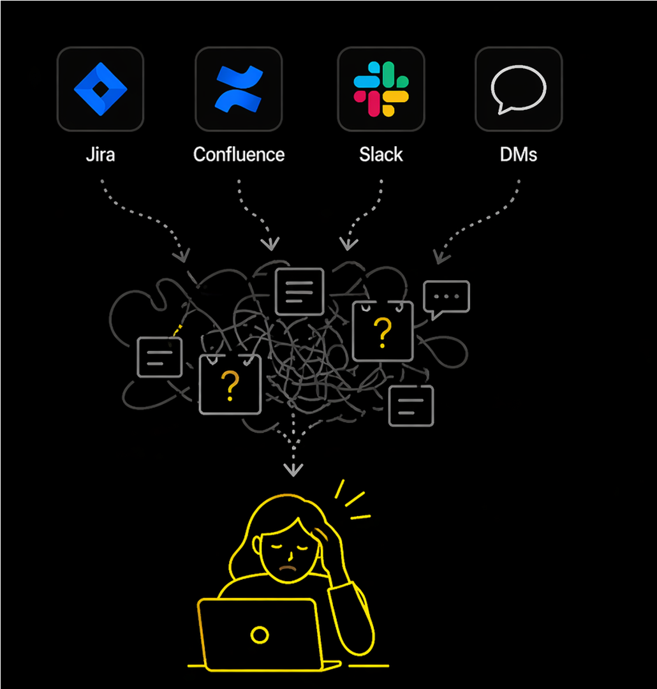
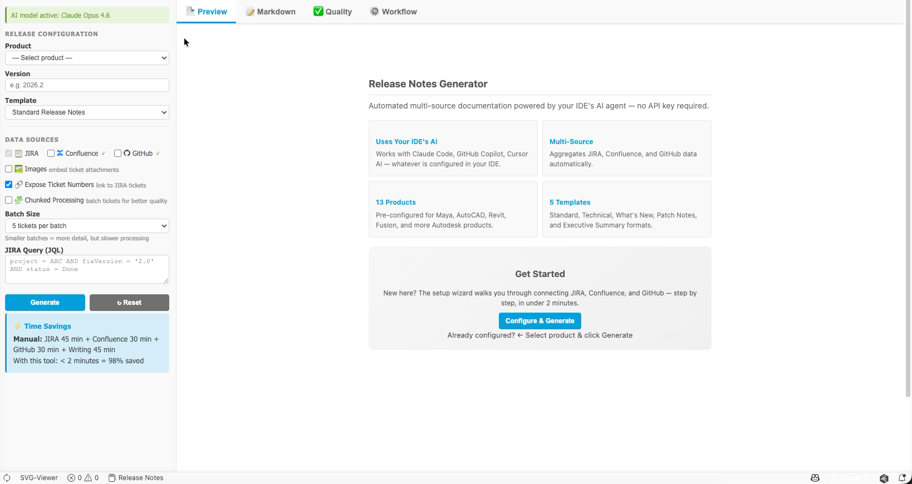
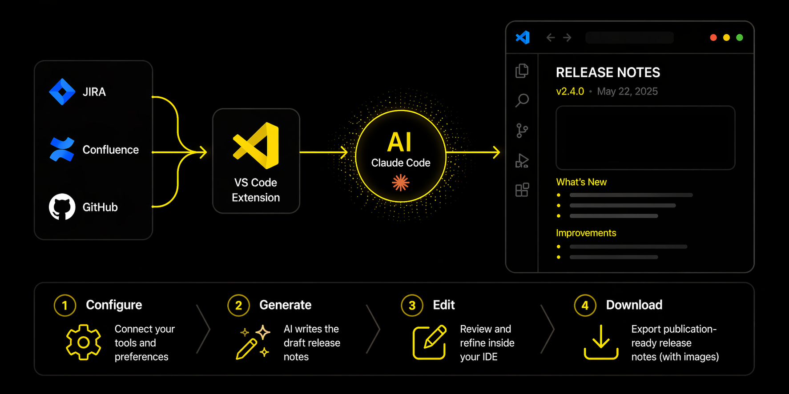
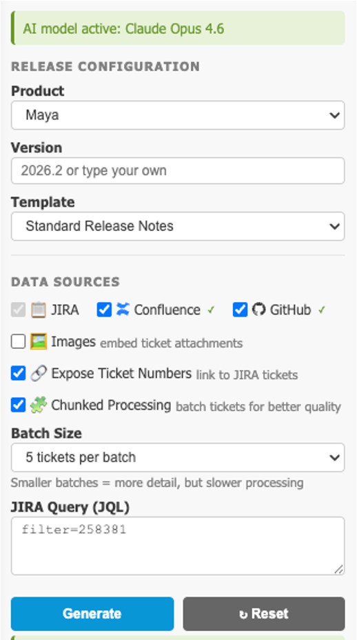
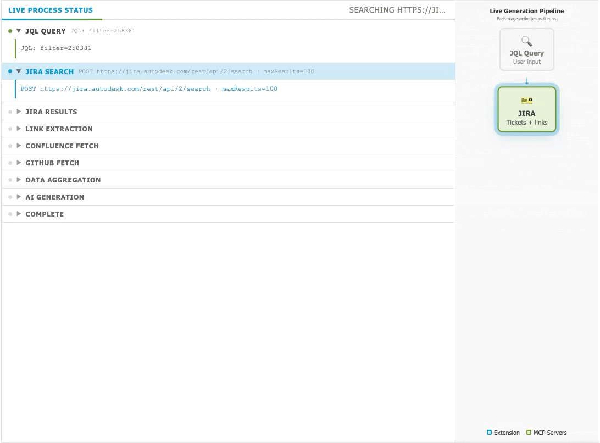
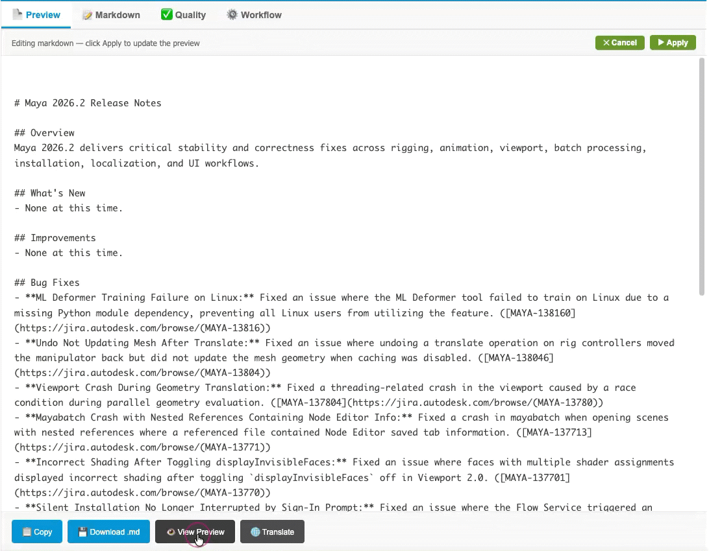
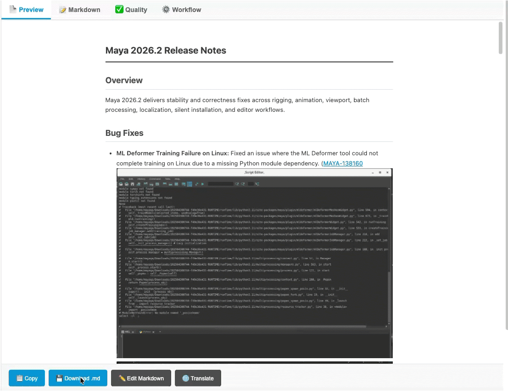
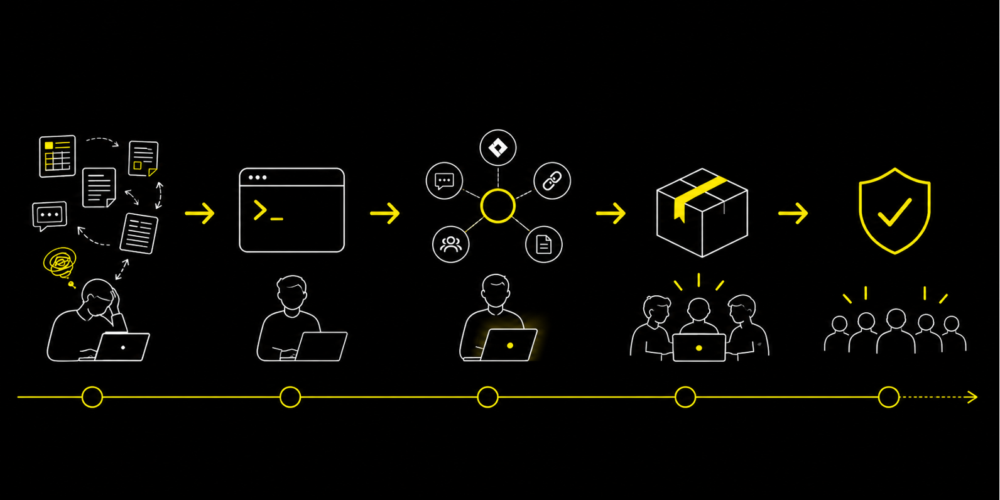

Discover how MCP servers bridge your content directly with AI models, transforming manual workflows into intelligent, automated processes.
Automate repetitive tasks
Leverage AI assistants
Transform your workflow
Model Context Protocol — A universal standard that connects AI assistants to your data and tools
Connect tools without writing complex integrations
Let AI handle formatting, summarization, and transformation
Pull live data directly from source systems
Minutes instead of hours for routine documentation

2 hours of writing
6 hours of hunting
Information scattered across JIRA, Confluence, Slack, and GitHub
Most time spent hunting, copying, and formatting — not writing.
This is the exact problem MCP servers solve.
It's not just writing release notes.
It's reconstruction.







Every hour you spend on repetitive tasks is an hour you could spend on strategic documentation work.
Start small, automate one task, and build from there.
Scan for Quick Reference Handout